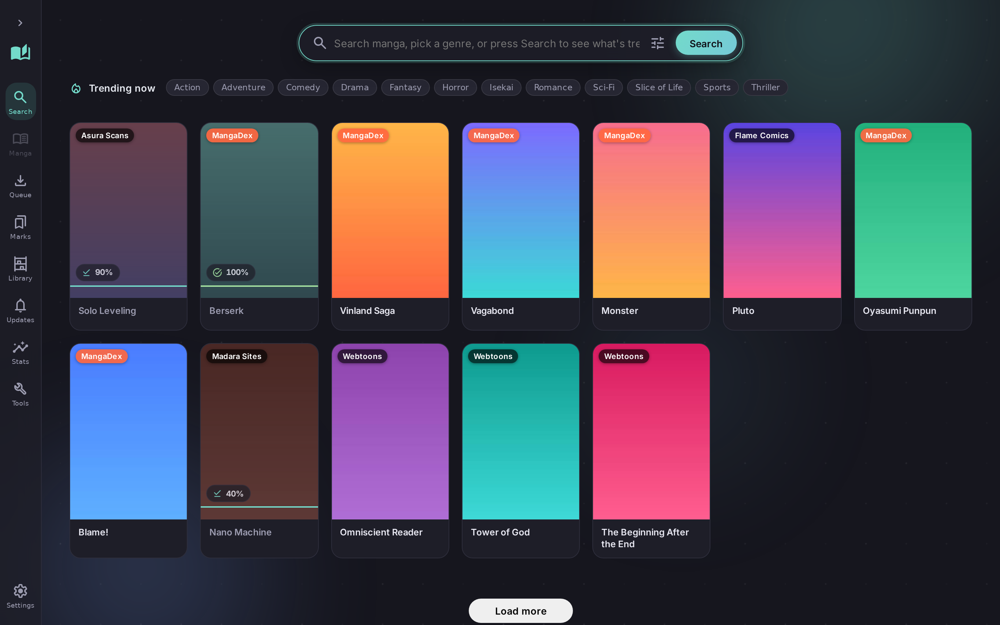
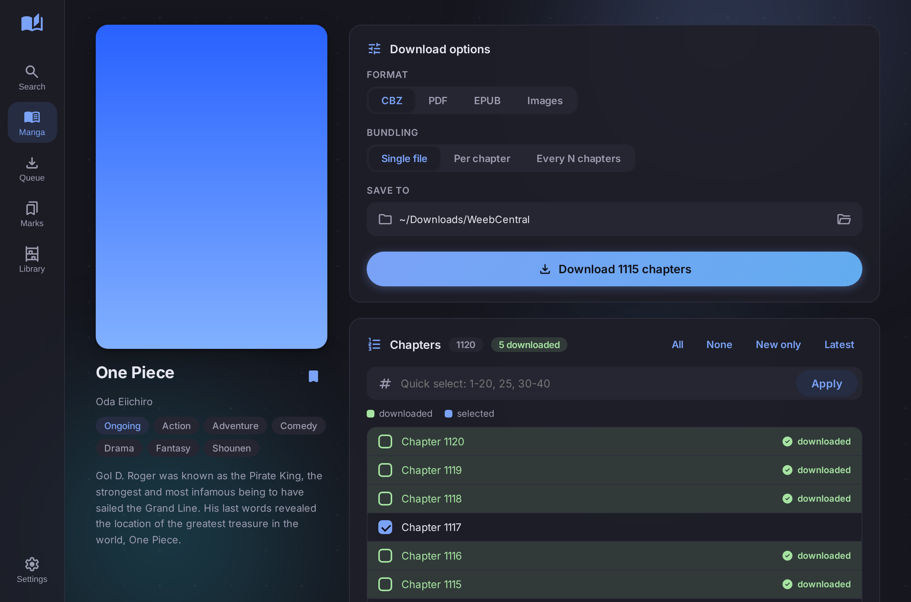
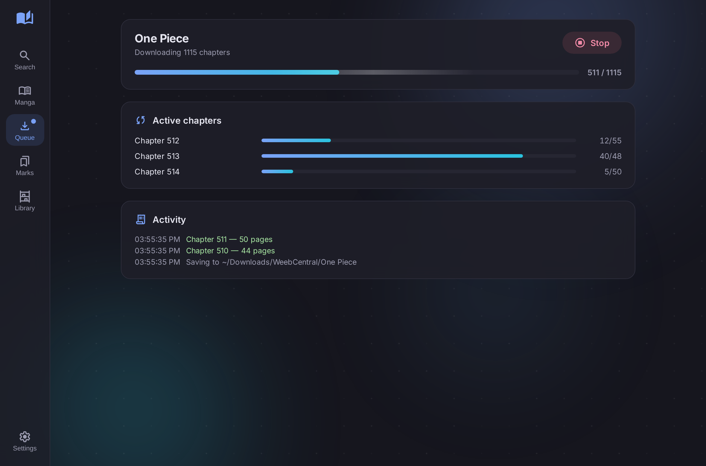
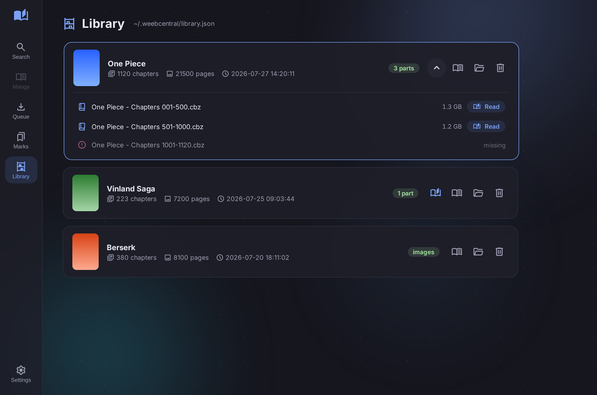
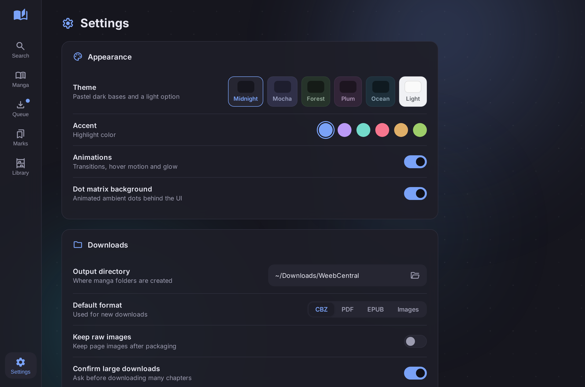
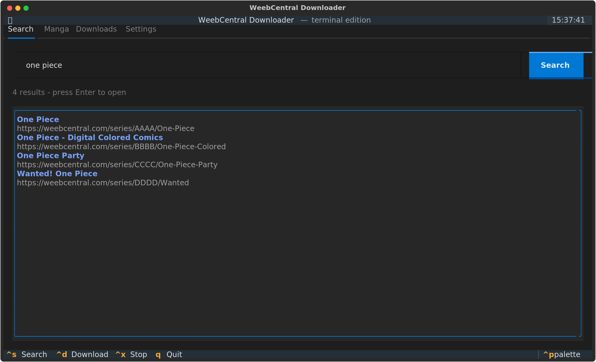

Paste a link from any supported site and MangaDL works out the rest — then packs the chapters into a CBZ, PDF or EPUB. Comes as a desktop app, an interactive terminal menu, and a CLI you can script.
Most of the work in a manga downloader is not the downloading. It is everything the sites do to make it difficult.
The source is detected from the URL, including links with tracking parameters — which used to silently return zero chapters.
Base64 page arrays, decoy search endpoints, obfuscated readers and randomly named JS variables — each handled per-source.
Covers that 403 without the right referrer are fetched server-side and inlined, so they show up instead of a blank tile.
Queue multiple manga and download them in parallel. Every progress event is tagged, so two series never mix chapters.
Chapter-level checkpoints, atomic writes and a resume command, so a crash costs you the current chapter and nothing else.
Type, status, genre and chapter-count filters — with unknown values kept rather than silently erasing whole sources.
The same engine underneath. Settings are shared, so what you change in one shows up in the others.
Cover grid, drag-to-file bookmark folders, live queue, themes and a passcode lock.
$ mangadl gui
Answer every prompt with a number. b goes
back, q quits — from any depth. No extra
install.
$ mangadl menu
Everything the app does, plus --json and
--urls for pipes.
$ mangadl <url> -c 1-50 -f pdf
Each one is a small module. Adding another does not touch the CLI, the menu or the app — they all read the same registry.
Adult sources are tagged and filtered by Safe mode, and each can be disabled individually. Weeb Central sits behind Cloudflare and may need FlareSolverr.
Enough flags to script it, short enough to remember.
# every chapter into one CBZ $ mangadl https://mangadex.org/title/<uuid> # chapters 1-50 as a PDF, and an EPUB alongside it $ mangadl <url> -c 1-50 -f pdf --also epub # one file per 10 chapters, with a custom name $ mangadl <url> --per 10 --name-range "{title} Vol {start}-{end}" # pick up where an interrupted run stopped $ mangadl resume
-c all · 5 · 1-20 · 1,5,10-20 · 50- · latest · first
# no query at all -> trending across every source $ mangadl search $ mangadl search "one piece" # all sources $ mangadl search "berserk" -s mangadex # just one $ mangadl trending horror # top horror now $ mangadl genres # every genre
$ mangadl search "solo" --type manhwa # manga|manhwa|manhua $ mangadl search "one piece" --status Ongoing $ mangadl search "naruto" -n 5 --sort title $ mangadl search "berserk" --sort chapters --reverse
$ mangadl search "blue" --urls # one URL per line $ mangadl search "blue" --json | jq '.[].title' # act on a numbered result, no copy-paste $ mangadl search "berserk" --open 1 $ mangadl search "berserk" --download 1
$ mangadl watch add <url> # track for new chapters $ mangadl watch check # check them all in parallel $ mangadl library verify # do the files still exist? $ mangadl library scan ~/Manga # re-link a moved folder $ mangadl stats # download statistics $ mangadl disk dupes # byte-identical files
$ mangadl sources # list them $ mangadl config up mangakatana # rank it higher $ mangadl config disable natomanga # exclude from results $ mangadl health # breaker + cache state $ mangadl lock set # set an app passcode
~/.mangadl/config.json —
app settings and per-source ranking in one file, written atomically
under a single lock.






$ git clone https://github.com/Compromisee/MDL $ cd MDL && pip install -e ".[all]" # then any of $ mangadl <url> # download $ mangadl menu # interactive $ mangadl gui # desktop app
[all] adds the desktop app and the
full-screen TUI.